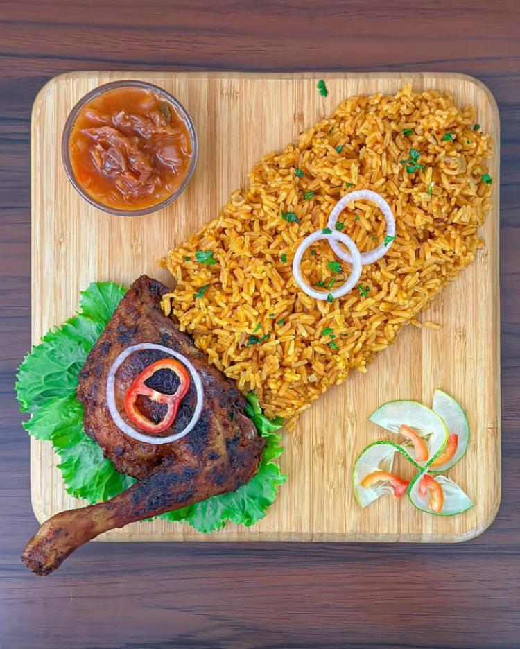

Éplucher l'oignon, le hacher et le faire revenir dans [...]

Préparation
Rincer le poulet, l’essuyer et le découper en 8 à 12 morceaux.
Éplucher l'oignon, le hacher et le faire revenir dans l'huile jusqu'à ce qu'il devienne translucide. Ajouter le concentré de tomate et poursuivre la cuisson. Ajouter la purée de tomate.
Ajouter le piment, le thym, le sel, le sucre et 200 ml de bouillon, et poursuivre la cuisson. Ajouter les morceaux de poulet, couvrir et laisser mijoter 25 minutes.
Éplucher les carottes et les couper en rondelles. Laver les haricots et les couper en deux.
Ajouter le tout avec le riz et le reste du bouillon au poulet, couvrir, laisser mijoter encore 25 minutes en remuant de temps en temps. Si nécessaire, verser un peu de bouillon.
Goûter le riz à la tomate et, si nécessaire, rectifier l’assaisonnement avec du sel et du poivre. Régalez-vous!
Préparation
ÉTAPE 1
Hacher le piment et réserver. Si vous n’êtes pas habitué au piment frais, attention au piment : il brûle! Émincer l’oignon et réserver.
ÉTAPE 2
Émietter grossièrement l’attieké dans un panier vapeur, afin de le réhydrater. Il se prépare comme le couscous (personnellement, je fais passer l’attieké cinq minutes à la cocotte minute).
ÉTAPE 3
Saler, poivrer, fariner le thon et le faire frire, cinq minutes sur chaque face, dans de l’huile bien chaude.
ÉTAPE 4
Dresser une grande assiette (ou 2 si vous préférez manger à l’européenne): répartir l’attieké, l’arroser de 3-4 cuillères d’huile de friture, émietter le cube maggi sur toute la surface du plat, et bien mélanger avec la main.
ÉTAPE 5
Répartir par-dessus l’oignon. Poser le poisson frit dessus. Proposer le piment à part. C’est encore meilleur avec les doigts!
Étape: 1
Salez, poivrez et dorez la viande des deux côtés dans une grande casserole à feu moyen vif, puis ajoutez 1/4 d'oignons grossièrement découpés, brassez et laissez suer.
Étape: 2
Ajoutez ensuite la moitié d'eau, couvrez et portez la viande à mi-cuisson. Ça m'a pris 20 minutes avec la cocotte-minute.
Étape: 3
Entre-temps versez dans un mixeur les arachides, le reste de gros oignons, le poireau, l'ail, le gingembre et la moitié restante d'eau, puis mixez jusqu'à obtenir une pâte un peu granuleuse.
Étape: 4
Une fois la viande arrivée à mi-cuisson, ajoutez y la pâte ainsi que la morue et les crevettes séchées et bien remuer, puis salez assez (à cause du ndolè) et bien mélanger.
Étape: 5
Fermez légèrement le couvercle de la casserole et laissez cuire arachide+viande 30 minutes environ. Astuce: Remuez depuis le fond de temps en temps pour éviter ça colle et brûle au fond.
Étape: 6
Ajoutez le ndolè aux arachides, mélangez en frottant le fond de la casserole et laissez mijoter 15 min environ.
Étape: 7
Chauffez l'huile dans une poêle, et faites revenir l'oignon émincé jusqu'à ce qu'il devienne translucide. Ajoutez alors les crevettes fraiches préalablement salé et poivré, laissez mijoter 1 minute, remuez et cuire une autre 1 minute.
Étape: 8
Versez les crevettes/oignon dans le ndolè, couvrez et laissez reposer hors du feu 5 minutes et votre sauce est prête.
Préchauffer le four à 350F.
Divisez votre poulet en deux. Frottez-le avec du paprika, du sel, du poivre, de la noix de muscade, du romarin et du thym sec.
Placez-le sur une grille de cuisson avec une casserole au fond pour recueillir le jus qui s'écoule du poulet.
Faites-le cuire au four pendant 40 minutes.
Pendant ce temps, faites chauffer une poêle à griller. Une fois chaude, placez-y vos moitiés d'oignons pour qu'ils soient un peu carbonisés. Mettez-les de côté.
Coupez vos concombres, oignons, poivrons.
Une fois que votre poulet est prêt, désossez-le et coupez-le en petits morceaux. Mettez-les dans un bol.
Dans ce bol, ajoutez les légumes, la mayonnaise, la moutarde, le zeste de citron vert et votre poulet. Mélangez bien. Ajoutez du sel et du poivre pour assaisonner.
Mettez le poulet sur un papier sulfurisé et enveloppez-le bien.
Placez-la sur la grille d'une plaque à pâtisserie, au four pendant 30 min à 350F.
Préparation ÉTAPE 1 Dans un grand bol, mélangez la semoule, la farine et le sel. Ajoutez progressivement de l'eau tiède tout en pétrissant jusqu'à obtenir une pâte souple et élastique. Laissez reposer 15 minutes. ÉTAPE 2 Divisez la pâte en petites boules. Étalez chaque boule en une fine couche, badigeonnez de beurre fondu et saupoudrez de semoule fine. Pliez la pâte en trois pour former un long rectangle, puis enroulez-la sur elle-même pour obtenir une spirale. ÉTAPE 3 Aplatissez délicatement chaque spirale et faites cuire sur une poêle chaude jusqu'à ce qu'elles soient dorées des deux côtés. Servez chaud, avec du miel ou du beurre.
Préparation ÉTAPE 1 Nettoyez et coupez le poisson en morceaux. Marinez avec un mélange de persil, d'ail, de piment et de sel. ÉTAPE 2 Dans une grande casserole, chauffez l'huile et faites revenir les oignons hachés. Ajoutez le concentré de tomate, laissez cuire quelques minutes, puis ajoutez les tomates fraîches écrasées. ÉTAPE 3 Ajoutez les légumes (carottes, choux, aubergines) et le poisson mariné. Couvrez d'eau et laissez mijoter jusqu'à cuisson complète des légumes et du poisson. ÉTAPE 4 Retirez le poisson et les légumes, puis ajoutez le riz à la sauce. Couvrez et laissez cuire à feu doux jusqu'à ce que le riz soit bien cuit. Servez le riz avec le poisson et les légumes.
Préparation ÉTAPE 1 Lavez et hachez les feuilles d'eru. Faites bouillir avec du sel pendant environ 10 minutes, puis égouttez. ÉTAPE 2 Dans une grande casserole, faites chauffer l'huile de palme et faites revenir les oignons hachés et l'ail jusqu'à ce qu'ils soient translucides. ÉTAPE 3 Ajoutez les morceaux de viande et laissez dorer. Ajoutez ensuite les crevettes séchées et la morue émiettée. ÉTAPE 4 Ajoutez les feuilles d'eru et mélangez bien. Ajoutez un peu d'eau et laissez mijoter pendant 30 minutes, en remuant de temps en temps. Rectifiez l'assaisonnement avec du sel et du piment. Servez chaud avec des plantains ou du manioc.
Préparation ÉTAPE 1 Dans un bol, mélangez la farine de tapioca, la noix de coco râpée et le sucre. ÉTAPE 2 Ajoutez progressivement de l'eau jusqu'à obtenir une pâte épaisse. Façonnez des petites galettes. ÉTAPE 3 Chauffez une poêle antiadhésive et faites cuire les galettes de chaque côté jusqu'à ce qu'elles soient dorées. Servez tiède avec du sirop ou du lait concentré sucré.
*PRÉPARATION* Étape1 Dans une casserole, ajoutez 500 ml d’eau et faites bouillir. Divisez les gombos en 2: coupez une partie en morceaux et râpez l'autre. Ajoutez les gombos et mélangez, faites cuire environ 10 min et mettez de côté. Étape2 Chauffez l'huile dans une casserole pendant 1-2 min. Ajoutez l'oignon haché, le piment frais, la tomate et faites frire pendant 2 min. Ajoutez le poulet fumé et toutes les protéines, 5 MAGGI Cube. Ajoutez de l’eau, remuez, couvrez et faites bouillir pendant 2-3 min. Étape3 Versez les gombos cuits dans la sauce, remuez et faites cuire pendant 2 min. Ajoutez les épinards émincés et laissez mijoter pendant 2 min. Servez avec du Riz, banane plantain pilé, igname pilée, etc.